Auxiliar 1: Gases Ideales
Ocho problemas sobre gas ideal: estequiometría con $PV=nRT$, presiones parciales de Dalton, tablas de reacción y grado de avance, y la deducción de la ley barométrica. Cada uno con su enunciado y el camino de resolución, sin el desarrollo numérico.
Temas que ejercita
- Ley del gas ideal combinada con estequiometría: de gramos a moles a volumen
- Ley de Dalton: presiones parciales y totales en mezclas
- Mezcla de recipientes a distintas $P$, $V$ y $T$ en un volumen común
- Tabla de reacción y grado de avance $\xi$; identificación del reactivo limitante
- Balance de ecuaciones químicas (redox incluidas)
- Deducción de la ley barométrica desde la segunda ley de Newton
- Descomposición parcial de un gas: incógnitas acopladas por Dalton
- Conversión de unidades no-SI (Torr, psi, $^\circ$F, ft$^3$)
Herramientas que hay que tener a mano
Elegir el $R$ correcto
$R = 0{,}082\ \text{atm·L·mol}^{-1}\text{K}^{-1}$ cuando $P$ va en atm y $V$ en litros; $R = 8{,}314\ \text{J·mol}^{-1}\text{K}^{-1}$ cuando todo va en SI. Casi todos los errores de estos problemas son de unidades, no de física.
Tabla de reacción
Filas: inicial, cambio, final. El cambio de cada especie es $\nu_i\xi$, con $\nu_i$ positivo para productos y negativo para reactivos. El reactivo limitante es el que se agota con el $\xi$ más pequeño.
Mezclar recipientes
Cada recipiente aporta sus moles: se calcula $n_i$ por separado con sus propias $P_i$, $V_i$, $T_i$, se suman, y luego se aplica $PV = n_tRT$ al volumen y temperatura finales. Las presiones no se suman directamente si los volúmenes o temperaturas difieren.
Después de una combustión
Recalcular los moles gaseosos con la tabla de reacción. Ojo con el agua: si el enunciado dice que condensa, sale de la fase gaseosa y deja de contribuir a la presión.
Barométrica desde Newton
Equilibrio de una rebanada de fluido de espesor $dz$: $P_{z+dz}A + mg = P_zA$. Se sustituye $m = \rho A\,dz$ y $\rho = PM/RT$, se separan variables y se integra. La clave es no saltarse la sustitución de $\rho$.
Aire seco
Su masa molar promedio es $\approx 29$ g/mol (≈79 % $\mathrm{N_2}$, ≈21 % $\mathrm{O_2}$). Aparece en cualquier problema atmosférico que no dé el dato explícitamente.
Fórmulas que se usan



Problemas
Datos: $M_{\mathrm{NaN_3}} = 65$ g/mol, $R = 0{,}082$ atm·L·mol$^{-1}$K$^{-1}$.
- Escribir y balancear la descomposición: $\mathrm{NaN_3}(s) \to \mathrm{Na}(s) + \mathrm{N_2}(g)$. Ajustar los coeficientes hasta cerrar Na y N.
- Convertir los 130 g a moles de azida con $n = w/M$.
- Usar la razón estequiométrica para pasar de moles de $\mathrm{NaN_3}$ a moles de $\mathrm{N_2}$. "Descomposición completa" significa que no queda azida.
- Convertir la temperatura a kelvin y la presión a atm (760 Torr = 1 atm) para que calcen con el $R$ dado.
- Aplicar $V = nRT/P$ con los moles de $\mathrm{N_2}$ — no con los de azida.
- Con $n_t = 10$ mol, $V = 120$ L y $T = 300$ K, obtener la presión total con $P = n_tRT/V$.
- De $x_{\mathrm{N_2}} = 0{,}40$ deducir $x_{\mathrm{O_2}} = 0{,}60$ (las fracciones molares suman 1).
- Repartir la presión total: $p_i = x_iP$. Verificar que $p_{\mathrm{N_2}} + p_{\mathrm{O_2}} = P$.
- Alternativa equivalente: calcular $n_i = x_in_t$ y aplicar $p_i = n_iRT/V$ a cada gas por separado. Debe dar lo mismo — buen chequeo.
- La presión total y las presiones parciales en la mezcla inicial de gases.
- La presión total y las presiones parciales del sistema después de la combustión.
- Balancear la combustión: $\mathrm{C_8H_{18}}(g) + \tfrac{25}{2}\mathrm{O_2}(g) \to 8\mathrm{CO_2}(g) + 9\mathrm{H_2O}(g)$. El enunciado la da sin ajustar — hacerlo es parte del problema.
- (a) Contar moles: $n_{\mathrm{N_2}}$ viene dado; $n_{\mathrm{O_2}}$ sale de $PV/RT$ con los datos del segundo recipiente (20 L, 303 K, 15 atm).
- Aplicar Dalton en el volumen final de 50 L a 298 K: $p_i = n_iRT/V$, y sumar para la presión total. Las condiciones originales de cada recipiente ya no importan una vez conocidos los moles.
- (b) Convertir los 57,1 g de isooctano a moles y armar la tabla de reacción con el grado de avance.
- Verificar cuál es el limitante: comparar los moles disponibles de $\mathrm{O_2}$ con los que exige la estequiometría. "Se quema totalmente el hidrocarburo" indica que el limitante es el isooctano, pero conviene confirmarlo.
- Obtener los moles finales de cada especie. Descartar el agua de la fase gaseosa: condensó y no contribuye a la presión.
- Recalcular presiones parciales y total con los moles gaseosos finales, en 50 L a 298 K.
- Demostrar que la distribución barométrica de un gas ideal sigue $P = P_0\,e^{-\frac{Mg}{RT}(h-h_0)}$. Indicación: segunda ley de Newton.
- Calcular la presión a 5000 m de altura, con $T_0 = 288$ K a nivel del mar y suponiendo $T$ y $g$ constantes con la altura. El gas es aire seco.
- (a) Aislar una rebanada de fluido de área $A$ y espesor $dz$. Plantear el equilibrio de fuerzas: la presión desde abajo sostiene el peso más la presión desde arriba.
- Escribir la masa de la rebanada como $\rho A\,dz$ y llegar a $dP = -\rho g\,dz$.
- Sustituir $\rho = PM/RT$ del gas ideal — este es el paso que introduce la física del gas.
- Separar variables ($dP/P = -\frac{Mg}{RT}dz$) e integrar entre $(h_0, P_0)$ y $(h, P)$, usando que $T$ es constante.
- (b) Reemplazar $M \approx 29$ g/mol (aire seco), $g = 9{,}81$ m/s$^2$, $T = 288$ K, $h - h_0 = 5000$ m. Cuidar que $M$ vaya en kg/mol si se usa $R$ en J/(mol·K).
- Balancear $\mathrm{KMnO_4} + \mathrm{HCl} \to \mathrm{KCl} + \mathrm{MnCl_2} + \mathrm{Cl_2} + \mathrm{H_2O}$ y proponer el cuadro de reacción para cada reactivo en función del avance $\xi$.
- Calcular el grado de avance cuando se agota el reactivo limitante, partiendo de 2 mol de $\mathrm{KMnO_4}$, 2 mol de HCl y 1 mol de KCl, y obtener los moles finales de KCl.
- (a) Es una redox: identificar los cambios de estado de oxidación (Mn pasa de +7 a +2; Cl$^-$ se oxida a $\mathrm{Cl_2}$) y balancear por el método del ion-electrón o por tanteo sistemático.
- Armar la tabla con tres filas: moles iniciales, cambio ($\nu_i\xi$) y moles finales. Los reactivos llevan $\nu_i$ negativo.
- (b) Para cada reactivo, calcular el $\xi$ que lo agota: $\xi_i = -n_i^0/\nu_i$. El limitante es el que da el menor valor.
- Evaluar la fila de KCl en ese $\xi_{\text{máx}}$. Ojo: el KCl aparece a la vez como producto y con 1 mol inicial, así que hay que sumar ambas contribuciones.
- Balancear $2\mathrm{NH_3} \to \mathrm{N_2} + 3\mathrm{H_2}$ y armar la tabla de reacción con $\xi$ desconocido.
- Expresar los moles totales finales $n_t(\xi)$ sumando las tres filas. Notar que la reacción aumenta el número de moles gaseosos.
- La presión medida da una segunda ecuación: $n_t = PV/RT$ a 500 K. Convertir 4,85 MPa y 1600 cm$^3$ a unidades consistentes.
- Igualar ambas expresiones de $n_t$, despejar $\xi$, y evaluar cada fila de la tabla.
- Chequeo: los moles de cada especie deben ser positivos y $\xi \le 0{,}8$ (el máximo si se descompusiera todo el $\mathrm{NH_3}$).
- Del llenado inicial con butano solo (40 dm$^3$, 1 atm, 298 K) obtener $n_{\mathrm{butano}}$ con $PV = nRT$.
- Imponer $x_{\mathrm{butano}} = 0{,}05$: eso fija $n_t = n_{\mathrm{butano}}/0{,}05$ y por diferencia $n_{\mathrm{Ar}}$.
- Convertir a masa: $w_{\mathrm{Ar}} = n_{\mathrm{Ar}}M_{\mathrm{Ar}}$.
- Para la presión final, aplicar $PV = n_tRT$ al mismo volumen y temperatura. Atajo: como $V$ y $T$ no cambian, $P_{\text{final}}/P_{\text{butano}} = n_t/n_{\mathrm{butano}} = 1/0{,}05 = 20$.
- Convertir todo a un sistema único antes de tocar la física: presiones a atm, volumen a litros, temperatura a kelvin.
- Notar que al ser isotérmico basta la ley de Boyle: $P_1V_1 = P_2V_2$. La temperatura no entra en el cálculo — el dato en $^\circ$F es en buena parte una distracción.
- Despejar $V_2 = P_1V_1/P_2$ y calcular $\Delta V = V_2 - V_1$.
- Chequeo de signo: comparar ambas presiones en la misma unidad antes de concluir. Si la presión final resulta mayor que la inicial, el gas se comprime y $\Delta V < 0$; si es menor, $\Delta V > 0$.
Estrategia general
- Primer paso siempre: convertir unidades y elegir el $R$ que calce. Hacerlo al principio evita rastrear el error después.
- Segundo paso: contar moles. Casi todos estos problemas se reducen a "cuántos moles de cada cosa hay" y luego aplicar $PV = nRT$ una sola vez.
- En mezclas: las presiones parciales sólo se suman si comparten $V$ y $T$. Si vienen de recipientes distintos, sumar moles, no presiones.
- Toda reacción química que aparezca hay que balancearla, aunque el enunciado la dé escrita: varios enunciados la entregan sin ajustar (P3, P5).
- El grado de avance $\xi$ convierte un problema de varias incógnitas en uno de una sola. Vale la pena armar la tabla aunque parezca innecesario.
- Si algo condensa, sale de la fase gaseosa. Es el detalle que más puntos cuesta en el P3.